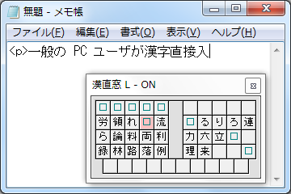

L-code は、ローマ字入力を漢字入力にまで拡張するコード体系で、 F131215 はその最終バージョン (2013 年 12 月 15 日版) です。
既に QWERTY ローマ字入力を身につけている、一般的な PC ユーザのための 漢直として、漢直Win などのような仮想鍵盤が利用できる環境を想定し、 漢字のコードを覚えていなくても入力できることを目標に設計しました。
 L-code の基本的なアイデアを具体例で説明します。 右図のスクリーンショットは、実際の L-code での入力風景です。 『……漢字直接入力……』の『力』を入力しようとしている場面で、 『力 (りょく)』の読みの“頭文字”である『r』を打鍵した直後の 仮想鍵盤を表しています。
『らりるれろ』に交じって、「ら行」の音の読みの漢字が並んでいる 様子が見て取れますが、この中で『力』は『h』の位置にあるので、 結局『力』のコードは『rh』ということが分かります。
『らりるれろ』に交じって、「ら行」の音の読みの漢字が並んでいる 様子が見て取れますが、この中で『力』は『h』の位置にあるので、 結局『力』のコードは『rh』ということが分かります。
仮想鍵盤に収まりきらないその他の「ら行」の漢字は、 『l』(小文字の L) で仮想鍵盤を“シフト”することで入力します。 たとえば、『輪 (りん)』は『rlh』で、『恋 (れん)』は『rllh』というように。
つまり、 L-code で漢字を入力する手順は、
となります。
合計 (n + 2) 打鍵で 1 文字を入力することになります (n ≧ 0) が、 この過程で、特に必要となるのは、 目的の漢字の読みの知識と、仮想鍵盤から漢字を探し出す作業だけです。
(無連想式の場合のように、無味乾燥なコードをひたすら覚える労力や、 「第一打鍵はあのキーだったかな…、それともこのキーだったかな…」 と当てずっぽうに試し打つ作業は、必要ないということです)
L-code の基本的なアイデアは以上のとおりですが、 実用化には、もう少し詳細を詰める必要があります。
「あ行」の音の漢字については、『w』を頭文字と定義しました (音がよく似ていて、漢字数の少ない「わ行」と統合する)。
「か・さ・た・は行」の音の漢字は数が多いため、シフト回数が増加しがちです。 1 文字あたりの総打鍵数を抑えるため、以下のように、 頭文字を“頭文字列”に拡張して、漢字を分散させることにしました。
コードを割り当てる際、各漢字に対して頭文字列は一意に決定しますが、 シフト回数と最終打鍵 (仮想鍵盤上の位置) は自由が効きます。 そこで、この部分には、その漢字の頻度順位を反映させるようにします。 すなわち、使用頻度の高い漢字ほどシフト回数が少なくなるように、 また打ち易いキーを使うように決めました。
以上の方針のもとで、実際にコードの割り当てを行ったところ、
学習漢字 (1006 字) については 2 〜 5 打鍵の範囲に収まりましたが、
常用漢字 (2136 字) については最長 9 打鍵となりました
(『股 (klllllllf)』『毀 (kllllllld)』『錮 (kllllllls)』の 3 字)。
この文章でもよく使っている語「打鍵」「鍵盤」の『鍵』を取ってみても、
そのコードは『knlllz』と 6 打鍵で、頻度の割に入力に手間がかかります。
そこで、コード中のシフト操作に相当する『l+』というパターンの部分を、
その長さの数字で置き換えた“短縮コード”を定義します。
『knlllz』 → 『kn3z』というように。
この短縮コードにより、漢字 1 字あたりのコード長は 2 〜 4 打鍵になります。
(ただし、この短縮コードは、 L-code の当初の目標とは相いれない、
“覚えていなくては入力できないコード”です。
したがって L-code の実装では標準コードと短縮コードの両方を受けつけるようにし、
普段は標準コードで入力するが、省力化したい場合に短縮コードも使用できる、
というようにするのが望ましいでしょう)
L-code の漢直としての評価について、簡単に記しておきます。 ここでは 2 種類の例文を用意して打鍵数を計算し、他の漢直と比較しました。
小学校の国語の教科書掲載作品の、 原民喜『たん生日』(原文 1042 文字、漢字含有率 21.11%) の場合
| TT-Code | 2102 打鍵、 2.017 打鍵/文字 |
|---|---|
| TUT-Code | 2228 打鍵、 2.138 打鍵/文字 |
| L-code (標準コード) | 2044 打鍵、 1.962 打鍵/文字 |
| L-code (短縮コード) | 2021 打鍵、 1.940 打鍵/文字 |
| [参考] ローマ字 | 2031 打鍵 |
打鍵数だけを見ると L-code が TT-Code や TUT-Code よりも少なくなりました。 L-code は、平易な文章を入力する場合に有効であると言えそうです。
『日本国憲法前文』(原文 643 文字、漢字含有率 40.59%) の場合
| TT-Code | 1328 打鍵、 2.065 打鍵/文字 |
|---|---|
| TUT-Code | 1362 打鍵、 2.118 打鍵/文字 |
| L-code (標準コード) | 1449 打鍵、 2.253 打鍵/文字 |
| L-code (短縮コード) | 1396 打鍵、 2.171 打鍵/文字 |
| [参考] ローマ字 | 1475 打鍵 |
『日本国憲法前文』では L-code は TT-Code や TUT-Code に比べて 打鍵数が多くなりましたが、単純なローマ字入力よりは減少しており、 漢直として、一応の有効性が示されたと言えそうです。
実装は Windows 7 上の 漢直Win 1.28 用のテーブルファイルを作成する という形で行いました。
また、練習環境として Windows 7 上の Google Chrome で動作する eelll/JS を (機能拡充およびファイル追加などを行って) 用意し、 実際に練習をして……
(……その成果と実際の使用感を、最後に書くべきところなのですが、
当時の L-code に関するドキュメントは、ここでとぎれてしまっていて、
続きが欠落しています。
確か、「このコードはダメだ」と判断して計画自体を中断したのだったと
思いますが、その理由は、結局のところ L-code は一つの試みの域を出ず、
使い慣れた入力方式に取って代わったり併用できるだけのレベルには
至っていなかったということなのでしょう)